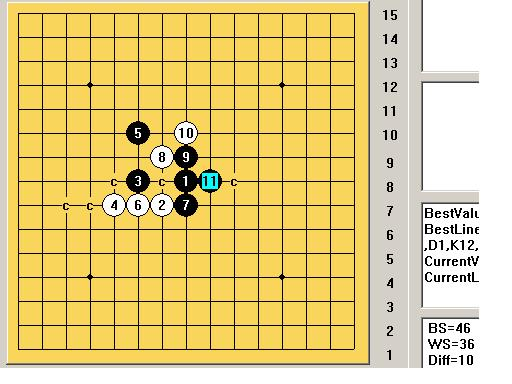
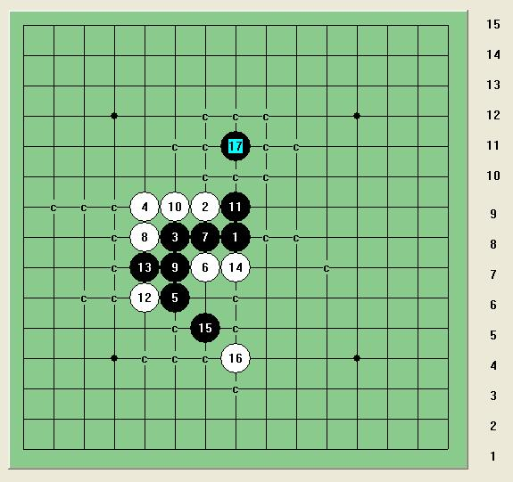

山口下的恒星
#1 山口下的恒星 作者：岳麓小棋后 发表时间：2009-5-17 10:58:07
#2 Re:山口下的恒星 作者：逆刃 发表时间：2009-5-17 11:08:51
直接VCT，哈哈。。#3 Re:山口下的恒星 作者：岳麓小棋后 发表时间：2009-5-17 11:11:27


 不会吧
不会吧
#4 Re:山口下的恒星 作者：逆刃 发表时间：2009-5-17 11:23:53
不过这个VCT很复杂哦~~~看来有很多手。。你先算算看。。#5 Re:山口下的恒星 作者：岳麓小棋后 发表时间：2009-5-17 11:27:05
恩，可以预见，我再细拆下
=======上图对应的爱五子棋谱代码如下，以便你拆解：========
h8g7f8e7f10f7h7g9i8g8g6g10g11j9h9h10e6
======================================================
这条线路也挺有前途的
#6 Re:山口下的恒星 作者：茗弈小刀 发表时间：2009-5-17 11:34:13
妹妹加油！#7 Re:山口下的恒星 作者：逆刃 发表时间：2009-5-17 11:35:26
不好意思，刚刚漏杀一个点了，呵呵。好像V不掉。#8 Re:山口下的恒星 作者：茗弈小刀 发表时间：2009-5-17 11:39:20
#9 Re:山口下的恒星 作者：刀学生 发表时间：2009-5-17 11:41:38
=======上图对应的爱五子棋谱代码如下，以便你拆解：========
h8g7f8e7f10f7h7g9h9h10i8g8g10g6g5j7f11e12h11c7d7h5e8f9g11i11h12e9g12
======================================================
这个14唯一 后面没完全地毯
#10 Re:Re:山口下的恒星 作者：岳麓小棋后 发表时间：2009-5-17 11:42:27

#11 Re:山口下的恒星 作者：刀学生 发表时间：2009-5-17 11:48:48
地毯了 11111
=======上图对应的爱五子棋谱代码如下，以便你拆解：========
h8g7f8e7f10f7h7g9h9h10i8g8g10j7g6d7c7j9e5
======================================================
［ 岳麓小棋后 于 2009-5-17 11:52:44 时花20金币送鲜花一朵］
［ 潇洒 于 2009-5-17 13:30:33 时花20金币送鲜花一朵］
#12 Re:山口下的恒星 作者：刀学生 发表时间：2009-5-17 11:52:41
大哥加个威望把#13 Re:山口下的恒星 作者：岳麓小棋后 发表时间：2009-5-17 11:57:15
这路我也拆过，不过拆到冲四那里就放弃了。。。你是怎么解决的=======上图对应的爱五子棋谱代码如下，以便你拆解：========
h8g7f8e7f10f7h7g9h9h10i8g8g10g6g5j7
======================================================
#14 Re:山口下的恒星 作者：刀学生 发表时间：2009-5-17 11:58:20
=======上图对应的爱五子棋谱代码如下，以便你拆解：========
h8g7f8e7f10f7h7g9h9h10i8g8g10g6g5j7f11e12h11c7d7h5e8f9g11i11h12e9g12
======================================================
［ 茗弈小刀 于 2009-5-17 12:10:50 时奖励此帖[金币加 20 威望加1］
#15 Re:山口下的恒星 作者：岳麓小棋后 发表时间：2009-5-17 11:59:51
=======上图对应的爱五子棋谱代码如下，以便你拆解：========
h8g7f8e7f10f7h7g9h9h10i8g8g10j7g6d7c7f5h11
======================================================
#16 Re:Re:山口下的恒星 作者：逆刃 发表时间：2009-5-17 12:06:13
我帮你地毯吧，算是对我那局话的补偿。

 山口下的恒星逆刃解.rar
山口下的恒星逆刃解.rar
［ 岳麓小棋后 于 2009-5-17 12:10:54 时花20金币送鲜花一朵］
［ 茗弈小刀 于 2009-5-17 12:13:40 时奖励此帖[金币加 20 威望加1］
#17 Re:山口下的恒星 作者：岳麓小棋后 发表时间：2009-5-17 12:12:16
很不错了，此型山口下的必胜四打5手出现了
#18 Re:山口下的恒星 作者：刀学生 发表时间：2009-5-17 12:14:44
哈哈哈哈 威望够了#19 Re:山口下的恒星 作者：茗弈小刀 发表时间：2009-5-17 12:16:08
刀学生，帮我找找动的漂亮点的20KB内图片吧，谢谢啦。#20 Re:山口下的恒星 作者：刀学生 发表时间：2009-5-17 12:17:30
500k内 也行
你要什么样的把视频截取过来传我mdlfree@126.com 或者把视频地址和时间段发给我
#21 Re:山口下的恒星 作者：茗弈小刀 发表时间：2009-5-17 12:18:27
我传不上去。。。。。。。。。。。。看了你那个上传的文章，好复杂感觉。#22 Re:山口下的恒星 作者：岳麓小棋后 发表时间：2009-5-17 12:20:46
学生刀这路杀法可是直接VCT的哦，逆刃
#23 Re:山口下的恒星 作者：刀学生 发表时间：2009-5-17 12:23:41
29手 不是把#24 Re:山口下的恒星 作者：岳麓小棋后 发表时间：2009-5-17 12:34:24
恩，不是，29手是VCTwo
#25 Re:Re:山口下的恒星 作者：沉默是金 发表时间：2009-5-17 15:06:58
=======上图对应的爱五子棋谱代码如下，以便你拆解：========
h8g7f8e7f10g9
======================================================
这个怎么杀
#26 Re:Re:Re:山口下的恒星 作者：岳麓小棋后 发表时间：2009-5-17 15:23:41

这路通明星杀法，没盘端问题的，不过这个也算比较难杀的一个点吧
#27 Re:Re:Re:Re:山口下的恒星 作者：沉默是金 发表时间：2009-5-17 15:27:16
那有5个必胜点了
=======上图对应的爱五子棋谱代码如下，以便你拆解：========
h8i9j8g9h6o1i8o2i10m1i7k1j9
======================================================
［ 失落刀 于 2009-5-17 20:55:00 时花20金币送鲜花一朵］
#28 Re:山口下的恒星 作者：茗奕的飞猪 发表时间：2009-5-18 12:21:57
谢谢小棋后老师！总是看到小棋后老师在辛勤地研究，为中国五子棋事业做贡献，佩服！